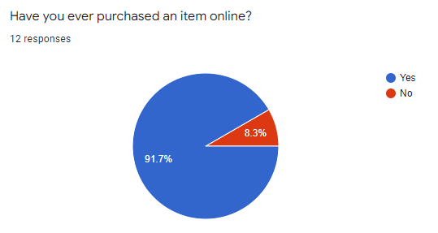

E-Commerce Survey Results
These are the results and conclusions driven from them using general knowledge and assumptions due to
the small sample size and lack of variety in it.

We can see from the results that while there are people that have never made purchases online,
e-commerce is quite common and known for most in our current day.
We can see from the results above, it is also quite common to shop online without making an actual purchase.
Be it checking prices, products, gaining information or for personal enjoyment, there are many types of people
shopping online. And from the extra information above, we can ascertain that while people who have never made purchases
still seem to have made shopping/browsing, there are those who partake in e-commerce, but never browse/shop without
making actual purchases.
We can see that a variety of people have different periods that they make purchases in, and this could be linked
to their wealth, availability, needs and interest, yet the information at hand is not enough to ascertain those links.
As the sample size in this case is biased towards teens and young adults due to the lack of participants,
this is not as descriptive as it could, but from the answers received from a few people in other age groups,
we can ascertain that age does not seem to affect their answers as their is something out there for everyone,
and everyone in some way is involved in technology.
From our information at hand gender does not seem to hold any specific links or changes into the answers provided.

Just like age and gender, level of education does not seem to hold much of an effect in e-commerce, if anything
it's the lack of access to money due to age or education that might affect it, and those require much bigger and
focused surveys to determine in detail.
After providing participants with the freedom to share their favorite online shopping sites,
we can see that we have received a wide variety of answers even from this small sample size.
The most notable ones are Amazon(at 4 mentions), and AliExpress/EBay(with 2 mentions respectively).
These are the most popular 3 shopping sites online and it is not a surprising outcome. What's more interesting
is the fact that there are many other results that seem to indicate that e-commerce is booming in many different
fields, countries and styles.